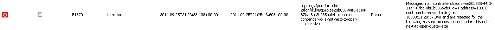
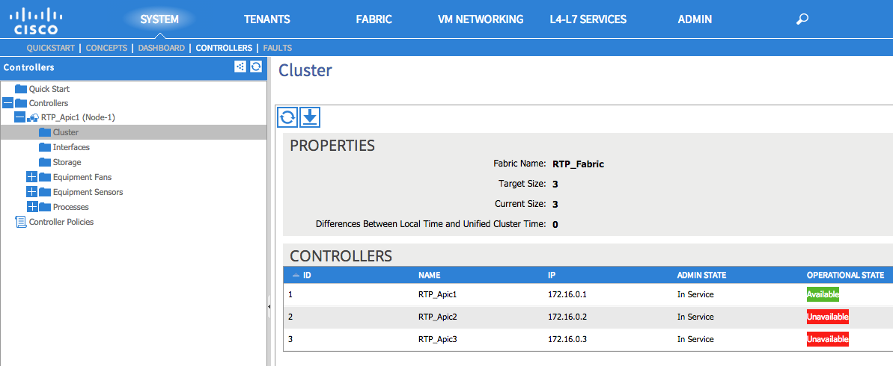
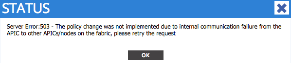

APIC High Availablity and Clustering¶
Overview¶
This chapter covers the APIC clustering operations. Clustering provides for high availability, data protection and scaling by distributed data storage and processing across the APIC controllers. While every unit of data in the object model is handled by a single controller, all units are replicated 3 times across the cluster to other controller nodes, regardless of the size of the cluster. Clustering makes the system highly resilient to process crashes and corrupted databases by eliminating single points of failure.
The APIC process that handles clustering is the Appliance Director process. The Appliance Director process runs in every controller and is specifically in charge of synchronizing information across all nodes in the cluster. While Appliance Director is in charge of performing periodic heartbeats to track the availability of other controllers, actual replication of data is done by each respective service independently. For example, Policy Manager on one controller is in charge to replicate its data to the Policy Manager instances in other controllers. Appliance Director only participates in indicating processes or services on which other controllers are their replicas set up in.
Each controller node in the cluster is uniquely identified by an ID. This ID is configured by the administrator at the time of initial configuration.
Cluster Formation¶
The following list of necessary conditions has to be met for successful cluster formation:
- Candidate APICs must have been configured with matching admin user credentials to be part of cluster.
- When adding controller nodes to the cluster, the administratively configured cluster size must not be exceeded.
- When a new node is added, its specified cluster size must match the configured cluster size on all other nodes in the cluster.
- Every node must have connectivity to all other nodes in the cluster.
- There must be a data exchange between reachable controller pairs.
In our sample reference topology, 3 controllers are being used, namely APIC1, APIC2, and APIC3. The process flow for forming the cluster is as follows:
APIC1 enters a state where the status shows an operational cluster size of 1 and the controller’s health of “fully-fit” in the GUI. During the setup script, the administrative cluster size was configured as 3. Once the fabric discovery has converged to the point where APIC1 has formed relationships with the fabric node switches, providing connectivity to APIC2, APIC1 and APIC2 will establish a data exchange and APIC2 will start sending heartbeats. Once APIC1 receives heartbeats from APIC2, APIC1 increments the operational cluster size to 2 and allows APIC2 to join the cluster. The discovery process continues and detects a third controller, and the cluster operational size is incremented again by a value of 1. This process of fabric and controller discovery continues until the operational cluster size reaches the configured administrative cluster size. In our reference topology, the administrative cluster size is 3 and when APIC3 joins the cluster, the operational cluster size is 3, and the cluster formation is complete.
Majority and Minority - Handling Clustering Split Brains¶
Due to the fundamental functionality of data replication, any ACI fabric has a minimum supported APIC cluster size of 3. With clustering operations, APICs leverage the concept of majority and minority. Majority and minority are used to resolve potential split brain scenarios. In a case where split brain has occurred, 2 APICs, such as APIC1 and APIC2, can communicate with each other but not with APIC3, and APIC3 is not able to communicate with either APIC1 or APIC2. Since there were an odd number of controllers to start with, APIC1 and APIC2 are considered to be the majority and APIC3 is the minority. If there were, to start with, an even number of APIC controllers, it will be more difficult to resolve which are the majority vs minority.
When an APIC controller network connectivity is lost to other controllers, it transitions into a minority state, while if the other controllers continue to be reachable in between, the still connected controllers represent a majority. In a minority state, the APIC enters a read only mode where no configuration changes are allowed. No incoming updates from any of the fabric switch nodes are handled by the minority controller(s) and if any VMM integration exists, incoming updates from hypervisors are ignored.
While an APIC remains in minority state, read requests will be allowed but will return data with an indication that the data could be stale.
In the scenario of loss of network connectivity resulting in the partitioning of the fabric and an APIC in minority state, if an endpoint attaches to a leaf managed by an APIC in minority state, the leaf will download and instantiate a potentially state policy from the minority controller. Once all controllers regain connectivity to each other and the split brain condition has been resolved, if a more recent or updated copy of the policy exists between the majority clusters, the leaf will download and update the policy accordingly.
Problem Description¶
When adding or replacing APIC within an existing cluster, potentially an issue can be encountered where APIC is not able to join the existing APIC cluster.
Symptom¶
During fabric bring up or expansion, APIC1 is the only controller online, and APIC3 is being inserted before APIC2, therefore APIC3 will not join the fabric.
Verification¶
Under System->Controller-Faults, verify the existence of the following fault:
{kind=link}
The fault message indicates that APIC3 cannot join the fabric before APIC2 joins the fabric. The problem will be resolved once APIC2 is brought up, then APIC3 will be able to join the cluster.
Problem Description¶
Policy changes are not allowed on APIC1 even though APIC1 is healthy and fully fit.
Symptom¶
APIC2 and APIC3 are not functional (shutdown or disconnected) while APIC1 is fully functional.
Verification¶
Under System->Controllers->Cluster APIC2 and APIC2 have an operational status of “Unavailable”
{kind=link}
When trying to create a new policy, the following status message is seen:
{kind=link}
These symptoms indicated that APIC1 is in the minority state and it thinks that APIC2 and APIC3 are still online, but APIC1 lost connectivity to both of these APICs via infrastructure VLAN.
One of the missing APIC, APIC2 or APIC3 needs to be powered up to resolve this error. Let’s say when APIC1 and APIC3 become part of the cluster again, APIC1 and APIC3 will be in the majority state where APIC2 (still offline) will be in the minority state.
Types of Cluster Faults¶
Cluster-related faults are designed to provide diagnostic information which is sufficient to correct detected faulty conditions. There are 2 major groups of faults - faults related to messages which are discarded by ApplianceDirector process on the receiving APIC, and faults related to cluster geometry changes.
Faults related to messages which are discarded by the ApplianceDirector process running on the APIC receiving the messages are then examined from the following two perspectives:
- Is this message from a cluster peer
- If not, is it from an APIC which might be considered as a candidate for cluster expansion
Consequently, there will be an attempt to raise two faults (F1370 and F1410)if the received message fails to qualify either check and is discarded by recipient.
There has to be a continuous stream of similar messages arriving over a period of time for a fault to be raised. Once the fault is raised, it contains information about the APIC experiencing the failure, including the serial number, cluster ID, and time when the stream of similar messages started to arrive.
Problem Description¶
A cluster with Operational ClusterSize equal to 3 will not accept an APIC as an addition or replacement which claims Operational Cluster Size equal to 5.
Symptom¶
A fault code of 1370 with a reason of “operational-cluster-size-distance-cannot-be-bridged” will be raised if the APIC trying to join has OperationalClusterSize that deviates from cluster’s OperationalClusterSize by more than 1.
Resolution¶
Change the operational cluster size on the new APIC to match from the initial setup script, or be only 1 greater than what is configured on the current fabric.
Problem Description¶
A controllers configuration is erased, the server is restarted and the controller is brought back into the cluster.
Symptom¶
A fault code of 1370 with a reason of “source-has-mismatched-target-chassis-id” will be raised when an trying to join the cluster has a new Chassis ID from what it was previosly known by other controllers.
Resolution¶
The corrective action is to decommission the server which its configuration was erased from any other controller, and commission back. The clusters will then be able to merge with the controller that has been brought back online.
Problem Description¶
Adding subsequent controllers beyond a number of 3 on a cluster previously configured with a size of 3 will result in a system fault and the new controller not joining the cluster.
Symptom¶
A fault code of 1370 with a reason of “source-id-is-outside-operational-cluster-size” is raised when the transmitting APIC has a cluster ID which doesn’t fit into cluster with current OperationalClusterSize.
Resolution¶
Change the cluster ID to be with the range of the defined cluster size from the setup script. The chosen cluster ID should be 1 greater than the current defined size It may be required to grow the cluster.
Problem Description¶
Adding a currently decomissioned server back into the cluster results in a fault.
Symptom¶
A fault code of 1370 with a reason of source-is-not-commissioned is raised when the transmitting APIC has a cluster ID which is currently decommissioned in the cluster.
Resolution¶
Commission the APIC.
Problem Description¶
Adding a controller from another fabric fails to join the cluster.
Symptom¶
A fault code of 1370 with a reason of fabric-domain-mismatch is raised when the transmitting APIC has a FabricID which is different from FabricID in the formed cluster.
Resolution¶
Run the APIC CLI command acidiag eraseconfig setup and set the correct FabricID on the APIC from the setup script.